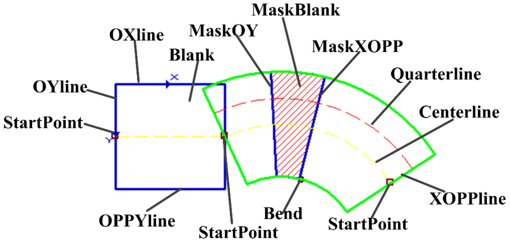
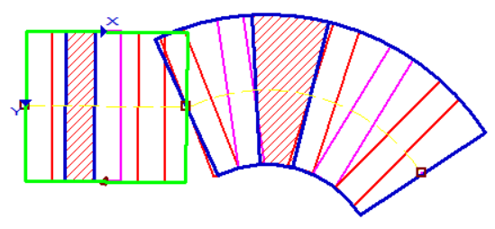

表示可变折线卡尺Gui控件类，即在视图中可见的图形，其中包含一个基础的图形数据类型scTrendlineExCaliper，Gui控件类只是对于scTrendlineExCaliper类型做了一个封装方便再图像上显示。例如曲线边宽检测工具的检测区域、找腰形工具的查找区域。如图所示，其中每一个小矩形(扇形)都是一个可变矩形，这些小矩形（扇形）组成了一个可变折线卡尺，每个小矩形(扇形)是可变折线卡尺中的一个分段。
如果要获取和图形相关的参数一般要先通过GetTrendlineExCaliper()获取到该Gui图形中包含的基础图形scTrendlineExCaliper类型。


| 分类 | 接口名称 | 接口描述 |
|---|---|---|
| 构造 | scGuiTrendlineEx | scGuiTrendlineEx ()默认构造函数。 |
| 函数 | GetTrendlineExCaliper | 获取可变折线卡尺。 |
| SetTrendlineExCaliper | 设置可变折线卡尺。 | |
| GetPolyline | 获取可变折线区域（多边形）。 | |
| SetPolyline | 设置可变折线区域（多边形）。 | |
| GetYlength | 获取指定分段的可变折线高度(OY边长度) | |
| SetYlength | 设置指定分段的可变折线高度(OY边长度) | |
| GetIsCaliperParamApplyToAll | 获取卡尺参数是否对全部可变折线有效 | |
| IsCaliperParamApplyToAll | 设置卡尺参数是否对全部可变折线有效 | |
| GetCaliperWidth | 获取指定分段的卡尺宽度。 | |
| SetCaliperWidth | 设置指定分段的卡尺宽度。 | |
| GetCaliperSpace | 获取指定分段的卡尺间隔。 | |
| SetCaliperSpace | 设置指定分段的卡尺间隔。 | |
| GetCaliperID | 获取指定分段中选中的卡尺ID，即在图像中显示为绿色的卡尺。 | |
| SetCaliperID | 设置指定分段的卡尺ID，即设置在图像中要显示为绿色的卡尺ID。 | |
| GetSearchDirection | 获取指定分段的卡尺搜索方向。 | |
| SetSearchDirection | 设置指定分段的卡尺搜索方向。 | |
| GetBendAngle | 获取可变折线指定分段的弯曲角 | |
| SetBendAngle | 设置可变折线指定分段的弯曲角 | |
| GetCaliperNum | 获取指定分段的卡尺数目。 |
功能：构造scGuiTrendlineEx对象。
参数：无。
返回值：无。
功能：获取可变折线卡尺。
参数：无。
返回值：可变折线卡尺，scTrendlineExCaliper类型。
功能：设置可变折线卡尺。
参数：
返回值：bool类型，表示是否设置成功。。
功能：获取可变折线区域（多边形）。
参数：无。
返回值：可变折线区域（多边形），scPolyline类型。
功能：设置可变折线区域（多边形）。
参数：
返回值：bool类型，表示是否设置成功。
功能：获取指定分段的折线高度（OY边长度）。
参数：
rectExID：指定分段的ID，输入参数，整型。
ylength：指定分段的折线高度（OY边长度），输出参数，浮点数类型。需要先创建一个浮点数变量，然后作为该函数的第二参数传入。
返回值：bool类型，表示是否设置成功。
功能：设置指定分段的折线高度（OY边长度）。
参数：
rectExID：指定分段的ID，输入参数，整型。
length：指定分段的折线高度（OY边长度），输入参数，浮点数类型。
返回值：bool类型，表示是否设置成功。
功能：获取卡尺参数是否对全部可变折线有效。
参数：无。
返回值：卡尺参数是否对全部可变折线有效，布尔型。
功能：设置卡尺参数是否对全部可变折线有效。
参数：
返回值：bool类型，表示是否设置成功。
功能：获取指定分段的卡尺宽度。
参数：
rectExID：指定分段的ID，输入参数，整型。
width：指定分段的卡尺宽度，输出参数，整型。需要先创建一个整型变量，然后作为该函数的第二参数传入。
返回值：bool类型，表示是否设置成功。
功能：设置指定分段的卡尺宽度。
参数：
rectExID：指定分段的ID，输入参数，整型。
width：指定分段的卡尺宽度，输入参数，整型。
返回值：bool类型，表示是否设置成功。
功能：获取指定分段的卡尺间隔。
参数：
rectExID：指定分段的ID，输入参数，整型。
space：指定分段的卡尺间隔，输出参数，整型。需要先创建一个整型变量，然后作为该函数的第二参数传入。
返回值：bool类型，表示是否设置成功。
功能：设置指定分段的卡尺间隔。
参数：
rectExID：指定分段的ID，输入参数，整型。
space：指定分段的卡尺间隔，输入参数，整型。
返回值：bool类型，表示是否设置成功。
功能：获取可变折线第rectExID分段的卡尺ID，卡尺ID为选中的卡尺，即在图形中显示为绿色的卡尺ID。默认无选中卡尺，获取的卡尺ID 为-1。该函数一般不做外部使用。
参数：
rectExID：指定分段的ID，输入参数，整型。
caliperID：指定分段的卡尺ID，输出参数，整型。需要先创建一个整型变量，然后作为该函数的第二参数传入。
返回值：bool类型，表示是否设置成功。
功能：设置可变折线第rectExID分段的卡尺ID。即设置选中卡尺的ID，被设置的卡尺会显示为绿色。该函数一般不做外部使用。
参数：
rectExID：指定分段的ID，输入参数，整型。
caliperID：指定分段的卡尺ID，输入参数，整型。
返回值：bool类型，表示是否设置成功。
功能：获取可变折线第rectExID分段的卡尺搜索方向。
参数：
rectExID：指定分段的ID，输入参数，整型。
searchdirection：指定分段的卡尺搜索方向，输出参数，整型。需要先创建一个整型变量，然后作为该函数的第二参数传入。
返回值：bool类型，表示是否设置成功。
功能：设置可变折线第rectExID分段的卡尺搜索方向。
参数：
rectExID：指定分段的ID，输入参数，整型。
searchdirection：指定分段的卡尺搜索方向，输入参数，整型。
返回值：bool类型，表示是否设置成功。
功能：获取可变折线第rectExID分段的弯曲角度。
参数：
rectExID：指定分段的ID，输入参数，整型。
bendangle：指定分段的弯曲角度，输出参数，浮点数类型。需要先创建一个浮点数变量，然后作为该函数的第二参数传入。
返回值：bool类型，表示是否设置成功。
功能：设置可变折线第rectExID分段的弯曲角度。
参数：
rectExID：指定分段的ID，输入参数，整型。
bendangle：指定分段的弯曲角度，输入参数，浮点数型。
返回值：bool类型，表示是否设置成功。
功能：获取指定分段的卡尺数目。
参数：
rectExID：指定分段的ID，输入参数，整型。
calipernum：指定分段的卡尺数目，输出参数，整型。需要先创建一个整型变量，然后作为该函数的第二参数传入。
返回值：指定分段的卡尺数目，整型。
无
```python
ROI_Line1 = GvTool.GetToolData(“曲线边宽检测工具_015.检测区域”) caliper = ROI_Line1.GetTrendlineExCaliper() #获取曲线边宽检测区域Gui控件中的可变卡尺折线
subrectexnum = caliper.GetSubRectNum() for i in range(subrectexnum): subrectex = caliper.GetSubRectEx(i) po = subrectex.GetOriginPoint() Px = subrectex.GetCornerPx() Py = subrectex.GetCornerPy() Popp = subrectex.GetCornerPopp() print(“——–%d———” %i) print(po.GetX(),po.GetY()) print(Px.GetX(),Px.GetY()) print(Py.GetX(),Py.GetY()) print(Popp.GetX(),Popp.GetY())
ROI_Line1 = GvTool.GetToolData(“曲线边宽检测工具_024.检测区域”)
polyline = GvVisionAssembly.scPolyline()
v1 = GvVisionAssembly.sc2Vector(50,50) v2 = GvVisionAssembly.sc2Vector(100,50) v3 = GvVisionAssembly.sc2Vector(150,50) polyline.AddVertex(v1) polyline.AddVertex(v2) polyline.AddVertex(v3)
ROI_Line1.SetPolyline(polyline) ROI_Line1.SetBendAngle(0, 45) ROI_Line1.SetBendAngle(1, 90) GvTool.SetToolData(“曲线边宽检测工具_024.检测区域”, ROI_Line1) ```